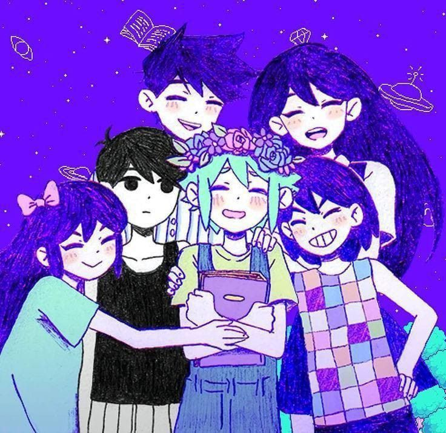

Sobre o jogo
OMORI é um RPG independente que mistura exploração, aventura e elementos psicológicos. A história acompanha personagens que exploram um mundo de sonhos e descobrem acontecimentos relacionados às suas memórias e emoções.
Durante a aventura, o jogador explora cenários, conversa com personagens e participa de batalhas por turnos.

Personagens principais
A história apresenta diferentes personagens, cada um com sua própria personalidade e participação nos acontecimentos do jogo.
- Omori:o personagem principal da aventura.
- Aubrey:uma das amigas que participa da jornada.
- Kel:um personagem animado e cheio de energia.
- Basil:um personagem ligado às memórias e às fotografias.
- Hero:o irmão mais velho de Kel e Mari.
- Mari:uma personagem importante para a história.
Como jogar
Para começar sua aventura em OMORI, você pode seguir algumas etapas:
- Conheça a história e os personagens.
- Explore os cenários disponíveis.
- Converse com outros personagens.
- Participe das batalhas por turnos.
- Descubra mais sobre o universo do jogo.